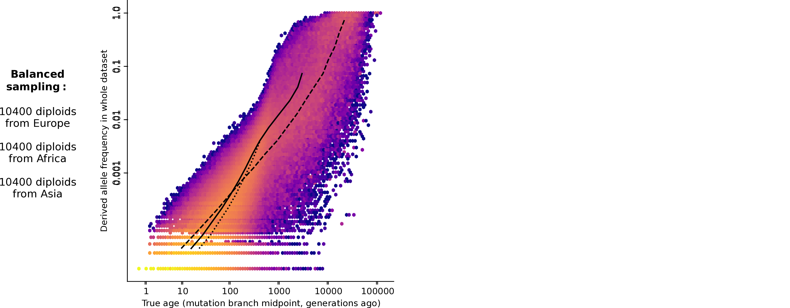
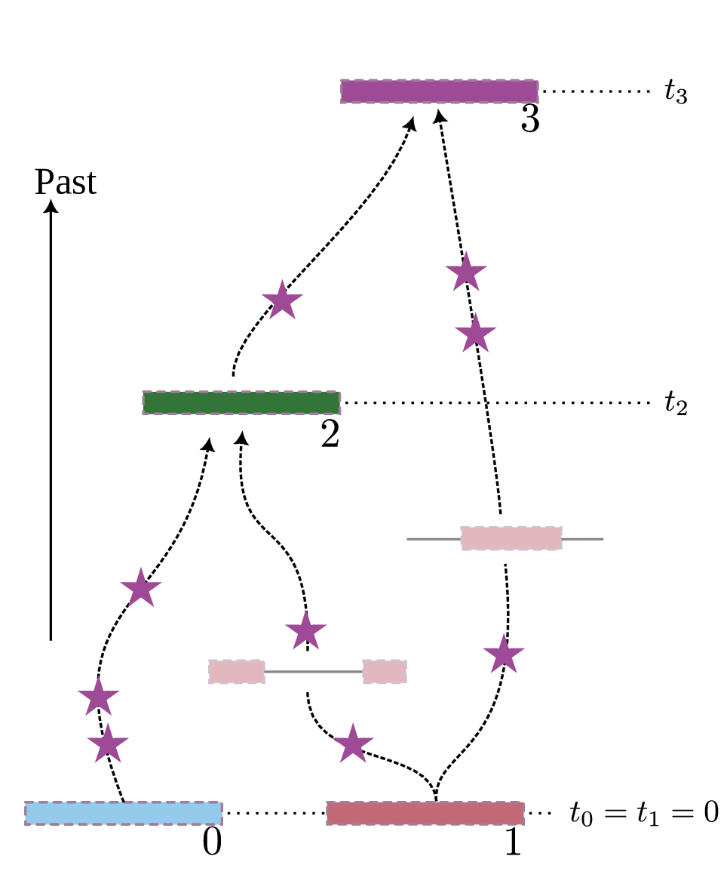
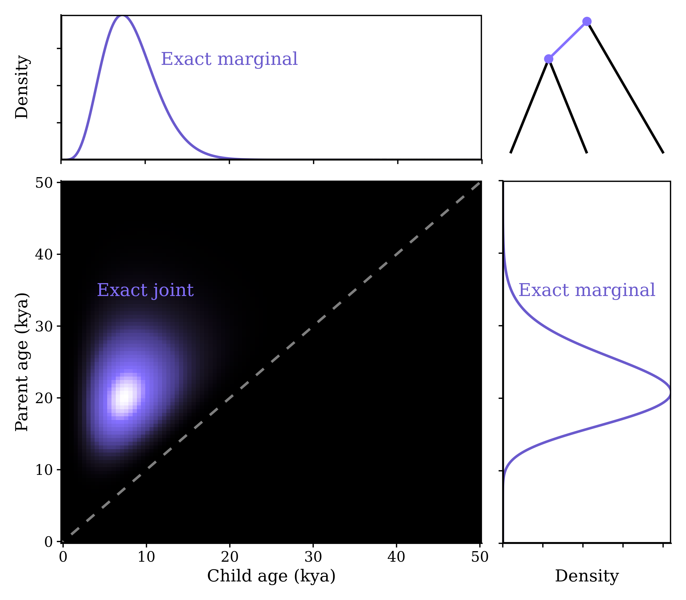
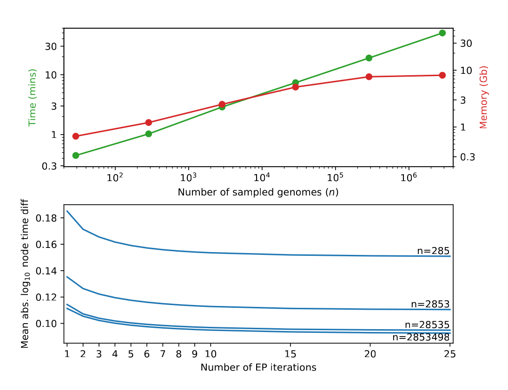

Dating large ARGs, with clinical applications
ProbGen 2025
Cold Spring Harbor Lab


Sam Tallman (Genomics England)
Yan Wong (Oxford)
Ben Jeffery (Oxford)
Jerome Kelleher (Oxford)
Duncan Mbuli-Robertson (Oxford)
Nate Pope (U Oregon)
slides in part due to Sam Tallman
What is an ARG?
For a set of sampled chromosomes, an Ancestral Recombination Graph describes at each position along the genome the genealogical tree that says how they are related.

Better, in some ways, is to think of an ARG as a set of relationships between haplotypes.
A forest is more than its trees: Fritze et al 2025

The 100,000 Genomes Project
UK initiative to sequence 100,000 genomes from 85,000 NHS patients and family members affected by rare disease or cancer.
71,800 participants (probands and family members) across over 190 rare diseases, none with genetic diagnoses prior to recruitment.
Since 2018, over 6,000 genetic diagnoses

Motivation: penetrant, pathogenic variants usually rare

But: datasets are notoriously unbalanced

Sam Tallman

Manrai et al 2016, Genetic Misdiagnoses and the Potential for Health Disparities
So: what about age?


Sims: stdpopsim/HomSap/chr17/OutOfAfrica_3G09/Mixed_K23
Dating an ARG
Given an ARG with:
- nodes \(\mathcal{N}\)
- edges \(\mathcal{E} \subset \{i \to j : i, j \in \mathcal{N}\}\)
- mutation counts per edge \(\{y_{ij} : ij \in \mathcal{E}\}\)
- sample nodes with known time
Infer:
- times \(\{t_i\}\) of remaining nodes
- satisfying the constraints \(\{t_i < t_j : i \to j \in \mathcal{E}\}\)




Dating an ARG
Goal: find \(\{t_i\}\)
The model: with mutation rate \(\mu\), edge span \(s_{ij}\): \[y_{ij} \sim \text{Poisson}(\mu s_{ij} (t_j - t_i) )\]
The MLE: minimize \[\begin{aligned}&\sum_{ij \in \mathcal{E}} \mu s_{ij} (t_j - t_j) \\&\qquad{}- y_{ij} \log\left(\mu s_{ij} (t_j - t_j)\right)\end{aligned}\] subject to \(\{t_i < t_j : i \to j \in \mathcal{E}\}\)
Variational approximation
Approximate posterior marginals by Gamma distribution
Fit by matching moments
Result (hopefully) has exact marginal moments but ignores dependence in posterior



Runtime


Validation: simulation


Validation: real data

tsinfer \(\to\) tsdate:
We built whole-chromosome tree sequences from the phased 100,000 Genomes Project (aggV2) dataset.
Chromosome 17: 5,680,570 ancestral genomes, ~870Mb.

Working with uncertainty
BF: quantifies (as an odds ratio) the probability that a given mutation is older than expected relative to some reference set of mutations at the same frequency in the data


Thanks!
- Andy Kern
- Nate Pope
- Thomas Forest
- Murillo Rodrigues
- Clara Rehmann
- Anastasia Teterina
- Gilia Patterson
- Chris Smith
- Jiseon Min
- Angel Rivera-Colon
- the rest of the Co-Lab
Funding:
- NIH NIGMS

- Jerome Kelleher
- Ben Haller
- Yan Wong
- Ben Jeffery
- Sam Tallman
- Duncan Mbuli-Robertson
- Hanbin Lee
- Gregor Gorjanc